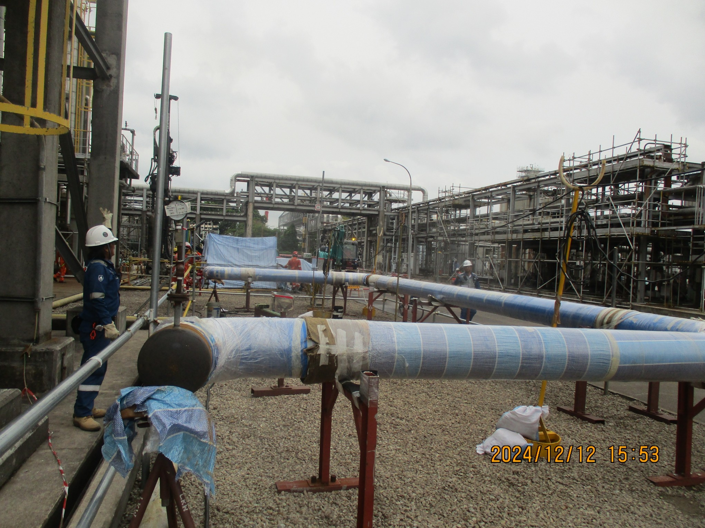
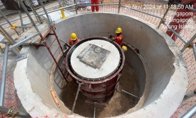
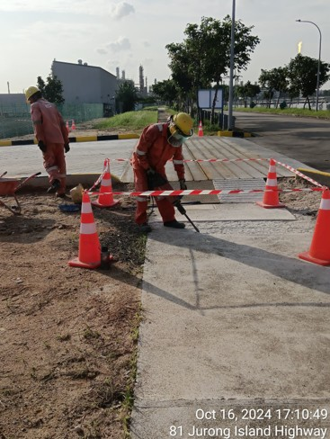

Lead
Industrial execution
Refinery and plant environments communicate the complexity and seriousness of the operating context instantly.

A full multi-page Toyah concept using your real logo and project photos, shaped through Constructivism, Brutalism, and Neobrutalism into a stronger industrial brand presence.
The current site describes Toyah as a Singapore-registered engineering and construction company that emphasizes hard work, innovation, value engineering, sustainable progressive growth, customer satisfaction, and workmanship standards. The addition of real photos makes that message much more immediate.
Toyah is presented as a construction and engineering partner serving industrial, commercial, and civil project environments with a broad technical scope.
The company’s own language emphasizes customer value, schedule discipline, quality, reliability, and responsible delivery.

Refinery and plant environments communicate the complexity and seriousness of the operating context instantly.

Technical images add credibility to the service story without needing heavy explanation.

Worker and field activity shots make the company feel active, current, and delivery-focused.
The live site states that Toyah’s mission is to provide quality services and products in the most efficient and responsible manner to generate outstanding customer value.
The site frames Toyah’s vision around becoming a leading provider of bespoke engineering and services and being recognized for quality and innovation.